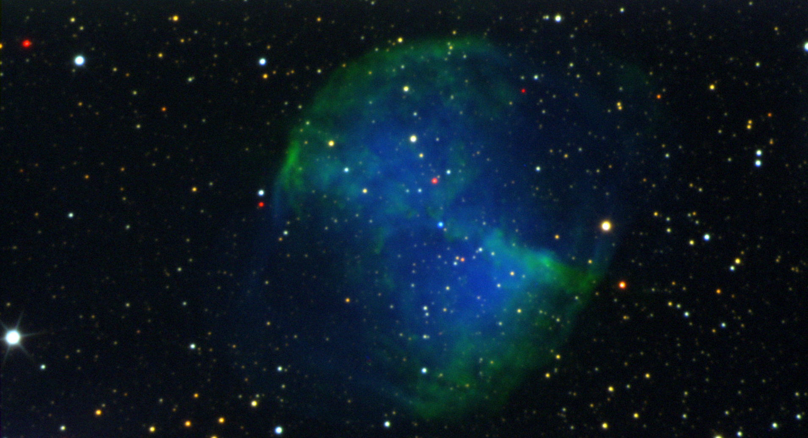
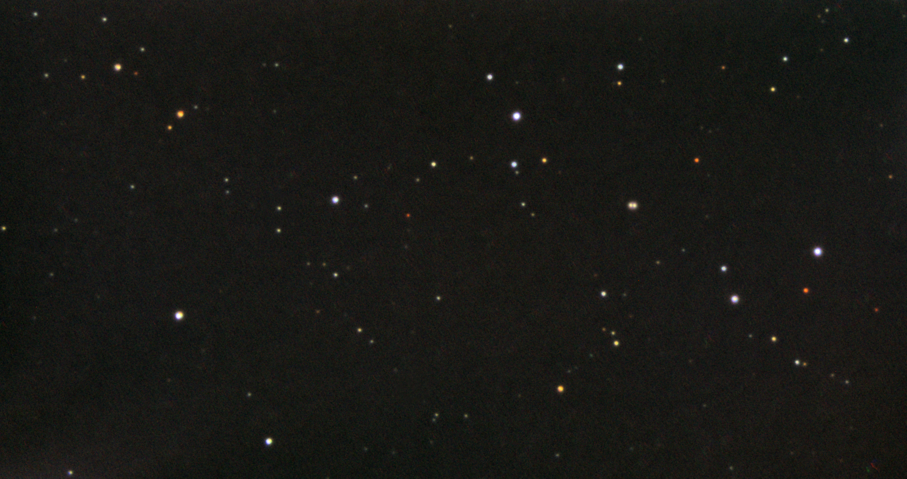
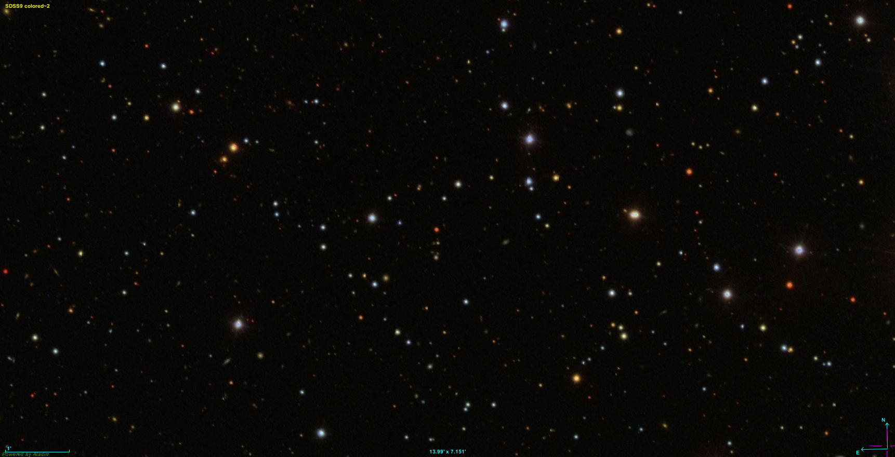

|
SLOAN jest to zestaw filtrów astronomicznych, astrofotograficznych, fotometrycznych, posiadających określony zakres przepuszczalności widma światła, pozwalający określić ilość promieniowania dla konkretnych zakresów długości fali docierających do kamery astrofotograficznej, co z kolei pozwala określić wskaźniki barwy danej gwiazdy, które są przydatne do określenia jej np. temperatury i typu widmowego. Obrazowania uzyskane za pomocą tego zestawu filtrów posiadają specyficzne zestawienie kolorystyczne. Większość astrofotografów wykonuje klasyczne RGB, czyli filtrami: Czerwonym-R-Red-czerwień, Zielonym-G-Green-zieleń, Niebieskim-B-Blue-niebieski. Wodór położony w spektrum w obszarze czerwieni w tej palecie na zdjęciach ostatecznie uzyskuje kolor czerwony. Część astrofotografów obrazowanie wykonuje w formie palety HST, czyli za pomocą filtrów wąskopasmowych: SII (siarka) jako kolor czerwony, H-alpha (wodór) jako kolor zielony, OIII (tlen) jako kolor niebieski. Wodór położony w spektrum w obszarze czerwieni w tej palecie na zdjęciach ostatecznie uzyskuje kolor żółty. Ale istnieje także i nasz SLOAN, w tej palecie, za kolor niebieski zdjęcia, odpowiada zieleń i niebieski widma światła, za kolor zielony zdjęcia odpowiada czerwień do żółci widma światła, za kolor czerwony zdjęcia odpowiada podczerwień widma światła. Wodór położony w spektrum w obszarze czerwieni w tej palecie na zdjęciach ostatecznie uzyskuje kolor zielony i właśnie ta cecha, tej palety barw sprawia, że jest ona na bakier z naszymi upodobaniami i przyzwyczajeniami, bo o ile żółta reprezentacja Ha w palecie HST jeszcze wygląda intrygująco, to zielony czerwony wodór już ciężko się przyjmuje. FILTRY SLOAN posiadają oznaczenia: u' - g' - r' - i' - z' W astrofotografii filtrami SLOAN stosujemy trzy z pięciu powyższych filtrów, a mianowicie: . - g' zakres ok. 400nm - 550nm (RGB - kolor niebieski) - r' zakres ok. 550nm - 700nm (RGB - kolor zielony) - i' zakres ok. 700nm - 850nm (RGB - kolor czerwony) Filtry SLOAN są dostępne amatorsko, gdyż występują w ofercie firmy ASTRODON, jednak z uwagi na swoją wysoką cenę oraz oferowane specyficzne walory kolorystyczne zdjęć, nie znajdują zbyt wielkiego zainteresowania wśród amatorów astrofotografii. Zgłębiając temat, postanowiłem sprawdzić, czy podobnie, jak to miało miejsce z tanią alternatywą dla filtra Ha 35nm, zastąpionego przez GSO Dark Red #29 + IR cut, o czym możecie więcej przeczytać tutaj, i w tym przypadku, istnieje możliwość, z posiadanych o wiele tańszych zamienników, uzyskać zbliżony efekt, co z oryginalnymi drogimi specjalizowanymi filtrami. Porównując specyfiki oryginalnych filtrów SLOAN oraz popularnych na rynku pozostałych filtrów, wytypowałem poniższy zestaw: Jako filtra - g' (reprezentowany na zdjęciu przez kolor niebieski) użyłem filtra Baader Planetarium niebieski 470nm oraz Baader Planetarium UV/IR-Cut (pierwotnie z powodu braku 470nm zastosowałem filtr cieczowy) Jako filtra - r' (reprezentowany na zdjęciu przez kolor zielony) użyłem filtra Baader Planetarium pomarańczowy dolnoprzepustowy 570nm oraz Baader Planetarium UV/IR-Cut Jako filtra - i' (reprezentowany na zdjęciu przez kolor czerwony) użyłem filtra podczerwieni 685nm Baader Planetarium IR-Pass Po zrobieniu zdjęć mgławicy M27 przez te trzy zestawy filtrów i osadzeniu ich w palecie zdjęcia kolorowego RGB, uzyskałem poniższy efekt. Messier 27 - SLOAN - g' - r' - i' | Newton 305/1500 - ASI290MM-C .  Ta sama mgławica, wykonana w standardowej palecie RGB, wygląda już troszkę inaczej. Jej elementy składające się z H-alpha, czyli wodoru, w filtrach SLOAN na zdjęciu pojawiają się barwie zielonej, gdy w klasycznej palecie RGB, występują zgodnie ze swoim umiejscowieniem na spektrum światła, czyli w czerwieni. W palecie SLOAN zostało sfotografowane niebo w tzw. projekcie SDSS. Dla przetestowania poprawności kolorystycznej gwiazd wykonałem moimi filtrami próbny fragment nieba, po czym zestawiłem go z oryginalnym SDSS. Wynik poniżej. Moje zdjęcie  Oryginalny SDSS  
|